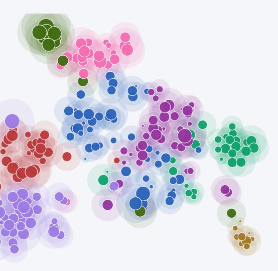

Publications
Full list of publications:

Explore all my publications An interactive map of all my papers, grouped by topic, with their citations and collaborators. Search, filter by topic or year, and click any paper to read it.The Quijote simulations
F. Villaescusa-Navarro et al.
ApJS 250, 2 (2020) · arXiv:1909.05273
The CAMELS project: Cosmology and Astrophysics with MachinE Learning Simulations
F. Villaescusa-Navarro, D. Anglés-Alcázar, S. Genel et al.
ApJ 915, 71 (2021) · arXiv:2010.00619
Pylians: Python libraries for the analysis of numerical simulations
F. Villaescusa-Navarro
Astrophysics Source Code Library (2018) · ascl:1811.008
The CAMELS Multifield Dataset: Learning the Universe's Fundamental Parameters with Artificial Intelligence
F. Villaescusa-Navarro et al.
ApJS 259, 61 (2022) · arXiv:2109.10915
Introducing the DREAMS Project: DaRk mattEr and Astrophysics with Machine learning and Simulations
J. C. Rose, P. Torrey, F. Villaescusa-Navarro et al.
ApJ 982, 68 (2025) · arXiv:2405.00766
Learning cosmology and clustering with cosmic graphs
P. Villanueva-Domingo, F. Villaescusa-Navarro
ApJ 937, 115 (2022) · arXiv:2204.13713
Robust field-level likelihood-free inference with galaxies
N. S. M. de Santi, H. Shao, F. Villaescusa-Navarro et al.
ApJ 952, 69 (2023) · arXiv:2302.14101
Cosmology with one galaxy?
F. Villaescusa-Navarro, J. Ding, S. Genel et al.
ApJ 929, 132 (2022) · arXiv:2201.02202
Ingredients for 21cm intensity mapping
F. Villaescusa-Navarro et al.
ApJ 866, 2 (2018) · arXiv:1804.09180
The Denario project: Deep knowledge AI agents for scientific discovery
F. Villaescusa-Navarro, B. Bolliet, P. Villanueva-Domingo et al.
PRX Intelligence 1, 021001 (2026) · arXiv:2510.26887
EurekaBench: Measuring Agentic Ability to Discover New Scientific Insights
J. Geng, Z. Wu, K. S. Chen, …, F. Villaescusa-Navarro, C.-Y. Lai, H. Chen, G. Neubig
NeurIPS, accepted (2026) · arXiv:2610.00492
Hundreds of papers by researchers worldwide have used the simulations I have led. Explore them in the interactive literature atlases: Quijote · CAMELS